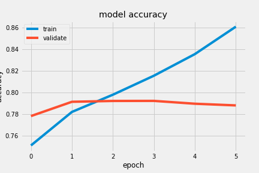
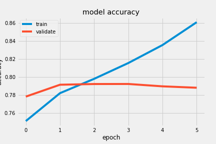

AAU Machine Learning
Author: Junel R.S. Solis
The main goal of this task was to perform a sentiment analysis on a large dataset of tweets using two different machine learning models. Selection of the models to be used is up to the creator to choose from. They should be tuned to get the best output and their performance should be compared.
The goal of tweet sentiment analysis is, given the contents of a tweet, to predict whether it has a positive or a negative sentiment. The models presented in this task should be able to predict any given tweet's sentiment with a reasonable amount of accuracy.
In this exercise, two models have been selected:
The dataset is a subset of the Sentiment140 dataset from Stanford University containing 1.6 million samples. The actual dataset provided for this task contained a fraction of the total samples - 160,000 exactly. This dataset contained two columns: tweet_text and its corresponding sentiment_label. The tweet_text column contained the original tweet including hashtags, RTs, mentions, emojis, HTML code and URLs.
There were some tweets that exceeded the traditional Twitter character limit of 140. While Twitter now allows tweets to be up to 280 characters, the decision was made nevertheless to drop rows exceeding 140 characters from the dataset. The sample size was randomly reduced to 70,000 samples to reduce processing and training times. The sentiment_label rows were converted to either [0,1]
Some tweets contained encoded HTML in the form of & and " which appeared very frequently in a word cloud of both the positive and negative tweets. These were decoded into their real-character strings & and " respectively. Some experimentation was done with lemmatization and stemming of entire sentences, but these did not seem to have a positive effect in the testing performance of either model and was eventually left out of the cleaning pipeline.
Further cleaning of the tweet_text rows included the following:
Spelling correction was attempted but eventually abandoned because of the memory requirements.
Two vectorization methods were chosen selected:
TF-IDF is commonly used in natural language processing (NLP) workflows while GloVe is an unsupervised learning algorithm that provides already vectorized data against which a dataset can be compared.
The choice to use an SVM classifier and an LSTM recurrent neural network was based on information in the course pages and Internet searches regarding twitter sentiment analysis and natural language processing.
It was quite simple to vectorize the SVM dataset with 2000 maximum features and fit the model using the Keras API.
While an SVM classifier is relatively simple, an LSTM network is much more complex in that its node layers not only pass information forward but also have mechanisms to provide recurrent feedback to previous layers. Hyperparameter tuning was also performed on the LSTM network using the Keras Tuner API in order to help derive optimum values for the number of units in the RNN layers and the learning rate. Attempts were made to perform automatic tuning of the dropout and recurrent dropout rates of the LSTM layers but these attempts yielded inferior performance and were eventually tuned manually.
The SVM classifier model achieved an accuracy of ~76.6% with minimal time elapsed for fitting the data. In contrast, the accuracy of the LSTM model was significantly higher at ~84.9%. A graph comparing the model accuracies is shown below.
During training it was also observed that validation loss started to increase and validation accuracy started to decrease around 6 epochs and therefore the training epochs was limited to this number. Note the quick loss increase after epoch 5. The model architecture is also shown.
 

Model: "sequential"
_________________________________________________________________
Layer (type) Output Shape Param #
=================================================================
embedding (Embedding) (None, 31, 200) 1000000
_________________________________________________________________
lstm (LSTM) (None, 31, 256) 467968
_________________________________________________________________
lstm_1 (LSTM) (None, 288) 627840
_________________________________________________________________
dense (Dense) (None, 2) 578
=================================================================
Total params: 2,096,386
Trainable params: 2,096,386
Non-trainable params: 0
_________________________________________________________________
The following are example tweets taken from official Twitter feeds and showcases a little the predictive power of both models trained during this task. A checkmark ✅ next to the sentiment indicates that the prediction is correct.
Crazy Joe Biden is trying to act like a tough guy. Actually, he is weak, both mentally and physically, and yet he threatens me, for the second time, with physical assault. He doesn’t know me, but he would go down fast and hard, crying all the way. Don’t threaten people Joe!
Sorry losers and haters, but my I.Q. is one of the highest -and you all know it! Please don’t feel so stupid or insecure,it’s not your fault
President of the United States, husband to @DrBiden, proud father & grandfather. Ready to build back better for all Americans.
No one is born hating another person because of the color of his skin or his background or his religion...
It's been the honor of my life to serve you. You made me a better leader and a better man.
A lack of experience was a major bottleneck in accomplishing this task, but it was an opportunity to learn about natural language processing and how vectorization is required in order for text content to be fed into machine and deep learning algorithms. In this regard, a very significant portion of time was used in researching the two models used as well as the concepts surrounding text vectorization.
Because of its nature, language data is highly variable and requires one to examine the raw dataset more fully in order to identify patterns early on that offer a possibility for correction or normalization. An example of this were the encoded HTML present in the tweets. Decoding those HTML snippets resulted in a small increase in accuracy for both models.
One aspect that might have improved the accuracy of these models is to add spelling correction during the preprocessing phase. This was attempted a few times over the course of the task but I was unable to scale the available spelling correction libraries to such a large dataset. Perhaps a future improvement to the preprocessing phase should include splitting the dataset into smaller batches and performing the spelling checks on those batches so as to bypass the enormous memory requirements.
While it is a good to observe a model with high predictive power, it may not be sufficient to rely solely on the predictions of one model. It is even better when there is agreement between models because that increases the confidence in the predicted result.
The SVM classifier model's accuracy of ~76.6% was outperformed by the LSTM model with its ~84.9% accuracy.
A conclusion may also be made that considerable amounts of time must be spent fine-tuning a model's parameters as well as in data preprocessing in order to get consistent and reliable predictions.
Overall, this was a very worthwhile exercise to perform as it encouraged a deeper look into natural language processing, text vectorization, recurrent neural networks and hyperparameter tuning using the Keras Tuner API.